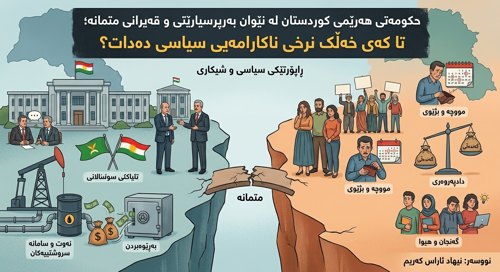

حکومەتی هەرێمی کوردستان لە نێوان بەرپرسیارێتی و قەیرانی متمانە؛ تا کەی خەڵک نرخی ناکارامەیی سیاسی دەدات؟

هەرێمی کوردستان بە درێژایی ساڵانی ڕابردوو ڕووبەڕووی کۆمەڵێک قەیرانی سیاسی، ئابووری و کارگێڕی بووەتەوە. ئەم قەیرانانە تەنها لە ناو دامەزراوە حکومییەکاندا نامێننەوە؛ بەڵکو کاریگەرییان لەسەر ژیانی ڕۆژانەی هاووڵاتیان، داهاتی خێزانەکان، دەرفەتی کار و ئاستی متمانە بە دامەزراوەکان هەیە.
پرسیاری سەرەکی ئەوەیە: کێ بەرپرسیارە لە بەڕێوەبردنی ئەم بارودۆخە، و دامەزراوە حکومییەکان تا چەندە ئامادەن لەبەرامبەر خەڵک وەڵام بدەنەوە؟
حکومەت تەنها بەڵێن نادات؛ دەبێت بە کردار، شەفافیەت و ئەنجامی دیار بەرپرسیارێتییەکەی بسەلمێنێت.
ئەم ڕاپۆرتە شیکردنەوەیەکی سیاسی و دامەزراوەییە لەسەر ئەو کێشانەی کە پەیوەندییان بە مافی هاووڵاتیان و بەڕێوەبردنی سامانە گشتییەکانەوە هەیە. مەبەست تۆمەتبارکردنی کۆمەڵێک یان تاکێک بەبێ بەڵگە نییە؛ بەڵکو داواکارییە بۆ ڕوونی، چاودێری و لێپرسینەوە.
١. قەیرانی متمانە و لاوازیی بەرپرسیارێتی
متمانەی هاووڵاتی بە حکومەت بە وتە و ڕاگەیاندن دروست نابێت. متمانە کاتێک دروست دەبێت کە خەڵک بتوانن بزانن بڕیارەکان چۆن و بۆچی دەدرێن، بودجە چۆن خەرج دەکرێت و بەرپرسان چۆن لەبەرامبەر ئەنجامی کارەکانیان وەڵام دەدەنەوە.
کاتێک زانیاریی گرنگ بە شێوەیەکی ڕوون بڵاو ناکرێتەوە، بوار بۆ گومان و بێمتمانەیی فراوان دەبێت. بۆیە شەفافیەت نابێت وەک هەڵبژاردەیەکی سیاسی سەیر بکرێت؛ بەڵکو دەبێت ببێتە ئەرکێکی بنەڕەتیی حکومەت.
٢. مووچە و بارگرانیی ژیانی هاووڵاتیان
دواکەوتنی مووچە و نائاساییبوونی داهاتی خێزانەکان کاریگەریی ڕاستەوخۆیان لەسەر ژیانی خەڵک هەیە. مووچە تەنها ژمارەیەک لە خشتەی دارایی نییە؛ مافی کارمەند و بنەمای دابینکردنی پێداویستییە سەرەکییەکانی خێزانە.
هاووڵاتی مافی ئەوەی هەیە بزانێت داهاتی گشتی لە کوێوە دێت، بۆچی مووچە دوا دەکەوێت و کام لایەن بەرپرسیارە لە چارەسەرکردنی کێشەکە. حکومەت پێویستە خشتەیەکی ڕوون بۆ مووچە دابنێت و هەر دواکەوتنێک بە زانیاری و بەڵگە ڕوون بکاتەوە.
٣. نەوت و شەفافیەتی سەرچاوە گشتییەکان
نەوت و سەرچاوە سروشتییەکان موڵکی گشتیین و دەبێت سوودیان بۆ هەموو هاووڵاتیان هەبێت. بەڕێوەبردنی ئەم سامانە پێویستی بە زانیاریی ڕوون لەسەر بەرهەمهێنان، فرۆشتن، داهات، گرێبەست و شێوازی خەرجکردن هەیە.
بڵاوکردنەوەی وردەکاریی گرێبەستەکان و ڕاپۆرتی داهات و خەرجی دەتوانێت متمانە زیاد بکات و ڕێگە لە گومان و بەکارهێنانی نادروستی سامانە گشتییەکان بگرێت. ئەگەر داهاتی سروشتی بۆ خزمەتگوزاریی گشتییەکانە، دەبێت خەڵک بتوانن بە ئاسانی بزانن ئەو داهاتە چۆن بەکاردەهێنرێت.
٤. گەندەڵی، دادپەروەری و چاودێری
بەربەرەکانی لەگەڵ گەندەڵی نابێت تەنها لە ئاستی دروشمدا بمێنێتەوە. پێویستە دامەزراوەکانی چاودێری و دادوەری بتوانن بە سەربەخۆیی کار بکەن و هەر کەسێک، بەبێ جیاوازیی پۆست و پەیوەندیی سیاسی، لەبەرامبەر یاسا بەرپرسیار بێت.
هەروەها پاراستنی ئازادیی ڕۆژنامەوانی و مافی ڕەخنەگرتنی هاووڵاتیان گرنگە. ڕەخنەی ئاشتییانە و پرسیارکردن لە بەرپرسان هەڕەشە بۆ دامەزراوەکان نییە؛ بەڵکو بەشێکن لە چاودێریی دیموکراتی و چاکسازی.
٥. ناکۆکییە سیاسییەکان و بەرژەوەندیی گشتی
ناکۆکیی نێوان هێزە سیاسییەکان نابێت ببێتە هۆی وەستانی خزمەتگوزارییەکان یان زیانگەیاندن بە ژیانی هاووڵاتیان. بەرژەوەندیی گشتی دەبێت لە سەرووی بەرژەوەندیی حزبی و تاکەکەسی بێت.
دامەزراوە حکومییەکان دەبێت بە شێوەیەکی پیشەیی کار بکەن و بڕیارەکان لەسەر بنەمای یاسا و پێویستیی خەڵک بدرێن، نەک تەنها لەسەر بنەمای هاوسەنگیی سیاسی. هاووڵاتی نابێت ببێتە قوربانیی ناکۆکییەکان.
٦. گەنجان، بێکاری و داهاتووی هەرێم
گەنجانی کوردستان پێویستیان بە دەرفەتی کاری دادپەروەرانە، پەروەردەی کوالێتی و ژینگەیەکی گونجاو بۆ دامەزراندنی پرۆژەیان هەیە. کاتێک دەرفەتی کار بە پەیوەندیی سیاسی یان ناسیاوەتی پەیوەست بکرێت، متمانەی گەنجان بە سیستەم لاواز دەبێت.
پشتگیریی کەرتی تایبەت، پەرەپێدانی شارەزایی پیشەیی، دابینکردنی دەرفەتی یەکسان و ڕێگری لە هەڵبژاردنی نادادپەروەرانەی کارمەندان دەتوانن بنەمایەکی باشتر بۆ داهاتوو دروست بکەن.
٧. بەرپرسیارێتیی هەرێم و حکومەتی فیدراڵی
هەموو کێشەکانی هەرێم نابێت بە شێوەیەکی سادە بخەینە ئەستۆی یەک لایەن. پەیوەندیی دارایی و سیاسیی نێوان حکومەتی هەرێمی کوردستان و حکومەتی فیدراڵی عێراق ئاڵۆزە و هەر لایەنێک دەسەڵات و پابەندیی یاسایی خۆی هەیە.
بەڵام ئاڵۆزییە سیاسییەکان نابێت ببنە پاساوێک بۆ نەبوونی شەفافیەت. هەردوو ئاستی حکومەت دەبێت بە ڕوونی بڵێن لە کام بابەتدا بەرپرسیارن، چ کارێکیان کردووە و چۆن دەتوانن کێشەکان چارەسەر بکەن.
٨. چاکسازییە پێویستەکان چین؟
- بڵاوکردنەوەی ڕاپۆرتی بەردەوام و ورد لەسەر داهات و خەرجیی گشتی.
- دانانی خشتەیەکی ڕوون و پابەند بۆ دابەشکردنی مووچە.
- کردنەوەی زانیاریی گرێبەست و داهاتی نەوت بۆ چاودێریی گشتی.
- بەهێزکردنی دامەزراوەکانی چاودێری و دادوەری و پاراستنی سەربەخۆیییان.
- پاراستنی ئازادیی میدیا و مافی ڕەخنەگرتنی هاووڵاتیان.
- دانانی پلانی کرداری بۆ کەمکردنەوەی بێکاری و پشتگیریی گەنجان.
- دیاریکردنی بەرپرسیارییەکان لە نێوان هەرێم و حکومەتی فیدراڵی بە شێوەیەکی ڕوون.
📌 خەڵک داوای شتێکی زۆر ناکەن: مووچەی لە کاتی خۆیدا، خزمەتگوزاریی باش، دادپەروەری، دەرفەتی یەکسان و زانینی ئەوەی سامانە گشتییەکان چۆن بەکاردەهێنرێن.
کۆتایی: متمانە بە کردار دەگەڕێتەوە، نەک بەڵێن
خەڵکی کوردستان شایستەی حکومەتێکن کە گوێ لە دەنگیان بگرێت، داهات و خەرجییەکانی ڕوون بکاتەوە و لەبەرامبەر بڕیارەکانی بەرپرسیار بێت. چاکسازی بە دروشم دەست پێ ناکات؛ بە شەفافیەت، یاسا، دادپەروەری و پابەندبوون بە مافی هاووڵاتیان دەست پێ دەکات.
پرسیاری کۆتایی ئەوەیە: ئایا بەرپرسان ئامادەن ئەم پێوەرانە بە کردار جێبەجێ بکەن و متمانەی خەڵک بگەڕێننەوە؟ وەڵامی ئەم پرسیارە لە ڕاگەیاندنەکاندا نییە؛ لە ئەنجامی کار و ژیانی ڕۆژانەی هاووڵاتیاندا دەردەکەوێت.
نیهاد ئاراس کەریم